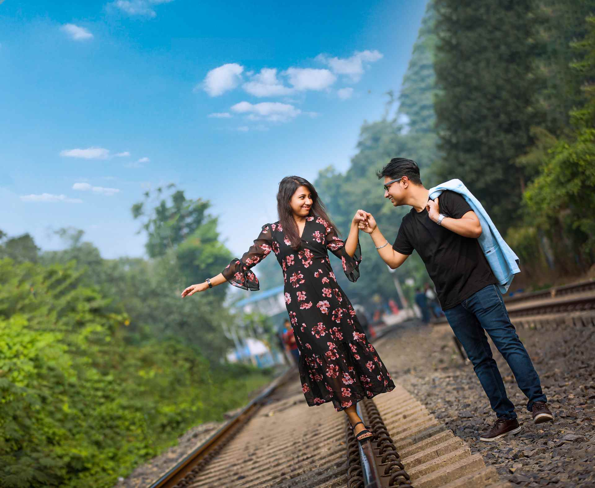
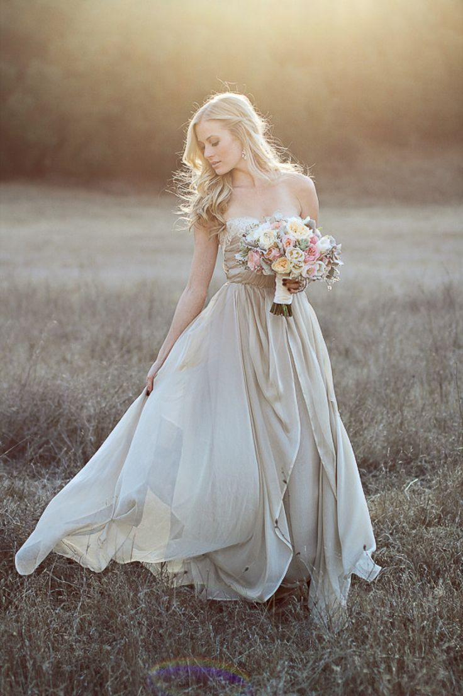
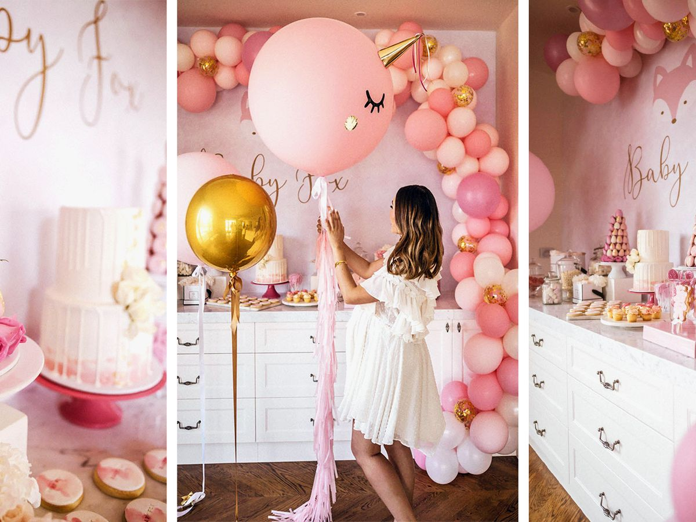
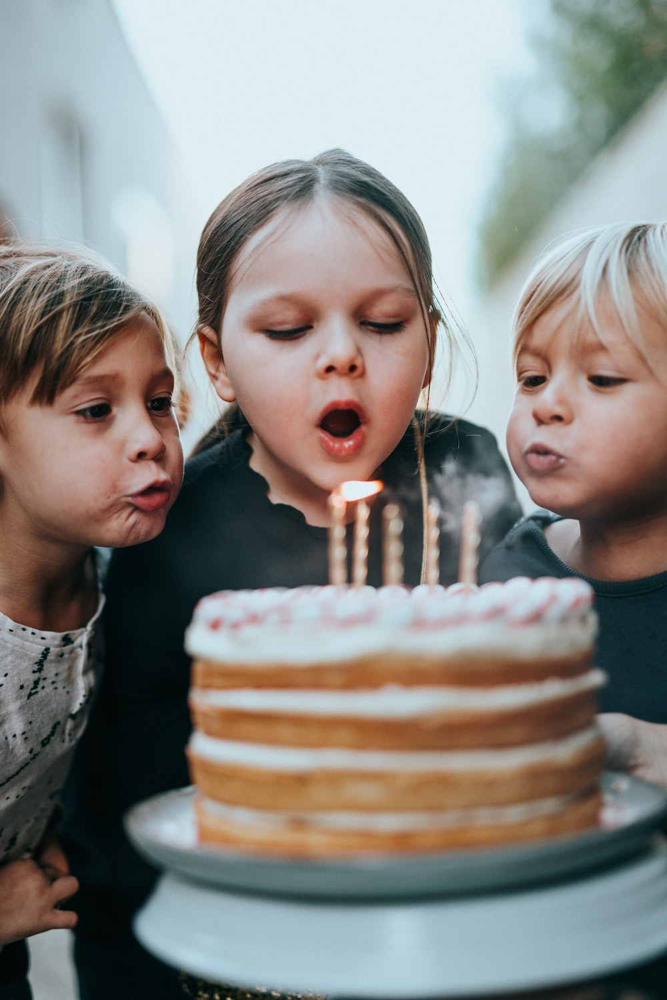

MyPhotography.lk
Our Services
 WEDDINGS
WEDDINGS
Awedding is typically one of most memorable day in a lifetime, one that people remember for years to come. For most couples, regular pictures just won't do. Wedding photography is much more than simply snapping a few pictures. It is a one kind of art. Just tell us what you need and we will fulfill that..
PRE SHOOTS
A pre-shoot is a great way to get acquained with being in front of the camera as many people haven't had professional photographs before- but it also gives me the perfect opportunity to see how you interact together, and capture the magical moments between you both.
BRIDAL SHOOTS
A bridal portrait photoshoot is a picture session that involves the bride getting dolled up in her full bridal makeup, hair and the big day. The're usually fasion style shoots that involve the bride posing against a minimalistic backdrop
BABY SHOWER
A baby shower is basically a party wich is thrown to celebrate the impending birth of a new baby. It's also a way foe friends and family to help the new parents get everything they need. After all, babies need tons of stuff, and the list can get quite expensive!
BIRTHDAY PARTIES
A baby shower is basically a party wich is thrown to celebrate the impending birth of a new baby. It's also a way foe friends and family to help the new parents get everything they need. After all, babies need tons of stuff, and the list can get quite expensive!